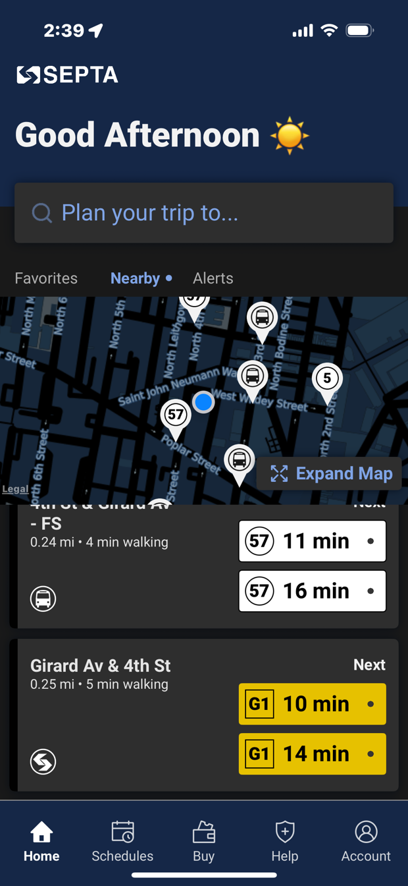

SEPTA App — Current, Future, and Transit, side by side
Four columns per rider job: the SEPTA app as it ships today (real screenshots), a future concept scoped to what only SEPTA can own, the Transit app SEPTA riders already use (real screens from Transit's May 6 pitch), and the own-vs-cede call. Use the feature tabs to move all columns to the same job. Notes sit outside the screens; everything inside a phone is real UI.
Current = actual app screenshots from the ATLAS drive. Future = concept with mock data, not a spec.
Current state

tap to see the next screen →
Future concept
2:395G 100%
SSEPTA
Good Afternoon ☀️
🔍 Plan your trip to…
Favorites NearbyAlerts
11
47
RR
⤢ Expand Map
Saved trips
Route 11 → Center City
40th & Baltimore · 0.1 mi
LIVE
Next
11
3 min⌁
11
18 min
Paoli/Thorndale → Suburban
Wayne Station
ON TIME · LIVE
Next
RR
8:15
Track 3 · 6 cars
RR
8:45
Route 47 → South Philly
5th & Market · 0.2 mi
SCHEDULED · not tracked
Next
47
9:42
No live signal on this route
Route 11 · Live
Toward Center City Toward Darby
11
11
⤢ Expand Map
Next vehicles · 40th & Baltimore
Toward Center City
Vehicle 4122
LIVE · 6s ago
3 min
Toward Center City
Vehicle 4090
LIVE
18 min
Toward Center City
No vehicle reporting
UNCERTAIN · schedule
9:42
Regional Rail
Departures · Suburban Station
Track
3
Paoli/Thorndale
to Malvern · 8:15
6 cars
ON TIME
Track
1
Lansdale/Doylestown
to Doylestown · 8:22
4 cars
4 MIN LATE
Track
—
Media/Wawa
to Wawa · 8:31
track posts ~10 min before
SCHEDULED
Track
—
Trenton Line
to Trenton · 8:40
Next train 9:10
CANCELED
Service Alerts
Active now
BSL
Broad Street Line · Detour
Southbound bypassing City Hall. Use 15th St or Walnut-Locust.
RR
Trenton Line · Canceled
8:40 departure canceled. Next train 9:10.
21
Route 21 · Detour
Off Walnut, 18th–22nd, through 6 PM.
Notify me
Alerts for my saved trips
Push when a saved line is disrupted
SEPTA Key
Travel Wallet
$12.50
Reload
Buy ticket
My passes
Monthly TransPass
Anywhere · through Jun 30
ACTIVE
Regional Rail — Zone 3
10-trip · 6 left
ACTIVE
↻ Action needed: KeyTix retires Aug 28. Move your balance to the updated SEPTA Key.
Plan a Trip
🔍 Where to?
↪
Plan a trip across modes
For full multimodal planning, live across bus, rail, subway, and bike, open Transit, SEPTA's partner app. Your SEPTA real-time and detours feed it directly.
Official SEPTA partner · premium unlocked for riders